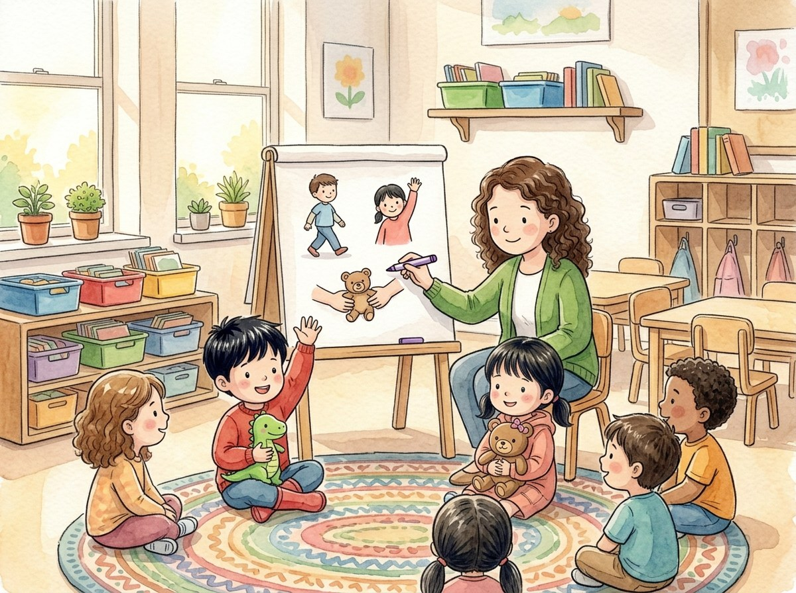

Kindergarten · Estudios sociales · SS.K.CV.2
Las reglas de nuestro salón
Un cuento sobre las reglas que nos cuidan en la escuela.
Tres palabras nuevas
Algo que todos debemos hacer para estar seguros y llevarnos bien.
Dejar que otra persona use o juegue con algo tuyo.
Un trabajo que te toca hacer a ti y que otros esperan que hagas.
Toca un dibujo para oír la palabra y qué significa.
El cuento
Es el primer día de kínder. Adrián entra corriendo al salón con su dinosaurio.
¡Pum! Choca con una mesa y se le caen los crayones a Génesis.
La maestra Luna los ayuda a recogerlos. —Vamos a hacer las reglas del salón —dice.
—Una regla nos dice cómo portarnos para estar seguros —explica.
Primera regla: dentro del salón caminamos. Así nadie se lastima.
Segunda regla: levantamos la mano para hablar. Así todos podemos escuchar.
Tercera regla: compartimos los juguetes. Así todos pueden jugar.
Después, la maestra le da a cada niño un trabajo.
Adrián riega la planta. Génesis reparte los papeles. Es su responsabilidad.
Ahora Adrián camina despacito. ¡Y su dinosaurio también!
Preguntas
Escucha la pregunta y toca el dibujo correcto.
-
Pregunta A. ¿Para qué sirve una regla?
Una regla nos dice cómo portarnos para estar seguros.
-
Pregunta B. ¿Por qué compartimos los juguetes?
Compartimos los juguetes para que todos puedan jugar.
-
Pregunta C. ¿Cuál es la responsabilidad de Adrián?
Adrián riega la planta. Es su trabajo en el salón.